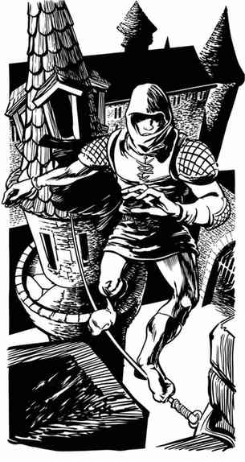

角色职业 · Character Classes
本章按原书先列生命骰、法术能力和职业等级上限表，再列可用护甲与武器表；随后依原书目录介绍各职业与子职业的职能、能力和等级。
生命骰、法术能力与等级上限（职业表 I） · Hit Dice, Spell Ability, and Class Level Limit (Character Classes Table I)
| 职业 | 生命骰类型 | 最多生命骰 | 法术能力 | 职业等级上限 |
|---|---|---|---|---|
| 骑士 Cavalier | d10¹ | 10 | 无 | 无 |
| 圣武士 Paladin | d10¹ | 9 | 有² | 无 |
| 牧师 Cleric | d8 | 9 | 有 | 无 |
| 德鲁伊 Druid | d8 | 14 | 有 | 23（秘会大祭司 Hierophant of the Cabal） |
| 战士 Fighter | d10 | 9 | 无 | 无 |
| 野蛮人 Barbarian | d12 | 8 | 无 | 无 |
| 游侠 Ranger | d8³ | 10（+1）³ | 有⁴ | 无 |
| 魔法师 Magic-User | d4 | 11 | 有 | 无 |
| 幻术师 Illusionist | d4 | 10 | 有 | 无 |
| 盗贼 Thief | d6 | 10 | 无⁵ | 无 |
| 杂技盗贼 Acrobat | d6 | 12 | 无 | 无 |
| 刺客 Assassin | d6 | 15 | 无⁵ | 15（刺客祖师 Grandfather of Assassins） |
| 武僧 Monk | d4⁶ | 17（+1）⁶ | 无 | 17（花之大宗师 Grand Master of Flowers） |
| 吟游诗人 Bard | d6 | 10 | 有 | 23（23 级吟游诗人大师 Master Bard） |
关于职业表 · I 的说明 Notes Regarding Character Classes Table I
1. 骑士与圣武士在 1 级时有 4–13 点生命值；依角色开始生涯时的社会地位，以 3d4+1 或 d10+3 生成。详情见后文骑士职业说明。 2. 圣武士从 9 级开始获得牧师法术能力，最终可施展最高 4 环的法术。 3. 游侠起始有 2d8 生命骰，随后每升一级再加一骰，到经验等级 10 级时最多 11 骰。 4. 游侠从 8 级开始获得德鲁伊法术能力，最终可施展最高 3 环的德鲁伊法术；从 9 级开始获得魔法师法术能力，最终可施展最高 2 环的魔法师法术。 5. 10 级或更高的盗贼，以及 12 级或更高的刺客，可以从卷轴上阅读魔法师（及幻术师）法术。 6. 武僧起始有 2d4 生命骰，随后每升一级再加一骰，到经验等级 17 级时最多 18 骰。
可用护甲与武器（职业表 II） · Armor and Weapons Permitted (Character Classes Table II)
| 职业 | 护甲 | 盾牌 | 可用武器 | 油 | 毒药 |
|---|---|---|---|---|---|
| 骑士 Cavalier | 任意¹ | 任意 | 任意¹ | 不可² | 仅限邪恶阵营 |
| 圣武士 Paladin | 任意¹ | 任意 | 任意¹ | 不可² | 绝不可用 |
| 牧师 Cleric | 任意 | 任意 | 棍棒、连枷、锤、硬头锤、长杖、套索、击昏棒、杖投石索 | 可 | 仅限邪恶阵营 |
| 德鲁伊 Druid | 皮甲或布甲 | 木盾 | 阿克里斯 aklys、棍棒、匕首、飞镖、绞索、锤、套索、击昏棒、投石索、弯刀、长矛、长杖、杖投石索、霍佩什镰形剑 khopesh、鞭 | 可 | 由地下城主决定 |
| 战士 Fighter | 任意 | 任意 | 任意 | 可 | 由地下城主决定 |
| 野蛮人 Barbarian | 任意³ | 任意 | 任意 | 可 | 由地下城主决定 |
| 游侠 Ranger | 任意 | 任意 | 任意 | 可 | 由地下城主决定 |
| 魔法师 Magic-User | 无 | 无 | 蒺藜、匕首、飞镖、小刀、投石索、长杖 | 可 | 由地下城主决定 |
| 幻术师 Illusionist | 无 | 无 | 蒺藜、匕首、飞镖、小刀、投石索、长杖 | 可 | 由地下城主决定 |
| 盗贼 Thief | 皮甲、镶钉皮甲、布甲或精灵锁子甲⁴ | 无 | 短弓、蒺藜、棍棒、手弩、匕首、飞镖、绞索、小刀、击昏棒、投石索、宽剑、弯刃刀、长剑、短剑 | 可 | 由地下城主决定 |
| 杂技盗贼 Acrobat | 同盗贼 | 无 | 同盗贼，另加套索与长杖 | 可 | 由地下城主决定 |
| 刺客 Assassin | 同盗贼 | 无 | 任意 | 可 | 可 |
| 武僧 Monk | 无 | 无 | 阿克里斯 aklys、投矛器 atlatl、手斧、博棍 bo stick、蒺藜、棍棒、任意弩、匕首、绞索、标枪、乔棍 jo stick、小刀、套索、任意长柄武器、击昏棒、长矛、长杖、弯刃刀 | 不可 | 由地下城主决定 |
| 吟游诗人 Bard | 皮甲、镶钉皮甲、布甲、环甲、精灵锁子甲或魔法锁子甲 | 无 | 棍棒、匕首、飞镖、绞索、标枪、小刀、套索、击昏棒、弯刀、投石索、长矛、长杖、混种剑、宽剑、弯刃刀、长剑、短剑 | 可 | 仅限邪恶阵营 |
关于职业表 · II 的说明 Notes Regarding Character Classes Table II
1. 骑士或圣武士不会穿皮甲、布甲或镶钉皮甲，因为这种衣着有失身份。同理，他们也不会使用通常与较低社会阶层联系在一起的长柄武器、射击武器及其他武器。详情见后文骑士说明。 2. 骑士与圣武士不可在个人战斗中使用油，但可以在攻城战中使用。 3. 野蛮人可以穿任何护甲；但若穿笨重或相当笨重的护甲，便不能享有该职业敏捷加值的全部好处。 4. 盗贼若穿皮甲以外的任何护甲，施展某些盗贼职能的成功率必须作调整。详情见后文盗贼表 II。
通则 General Notes。 角色可以临时捡起并使用本职业不准使用的武器，但始终须承受该职业的不熟练减值；多职业角色采用其中最严厉的减值。角色不得留下、携带这种不准使用的武器，供日后再用。
身高不足 5 尺的角色，不能有效使用长弓或长度超过 12 尺的武器。体重不足 100 磅的角色，不能使用重弩、重量超过 200 金币重量的长柄武器，或双手剑。这些禁令优先于上一条通则；既然角色完全不能挥使这些武器，不熟练减值便无关紧要。
骑士 · Cavalier
骑士职业没有主要属性，因此不会因属性优异而获得经验值加值。角色的力量、敏捷、体质均须至少 15，智力和感知均须至少 10。骑士起始必须属于善良阵营：守序善良、中立善良或混乱善良。骑士的攻击和豁免按战士处理，但使用某些武器时还会获得额外能力，对某些豁免也有调整。骑士及其子职业圣武士不享有武器专精的好处。
要成为骑士，角色必须侍奉某位神祇、贵族、某个组织，或某项特殊事业。地下城主决定战役条件是否允许满足这项要求，以及该角色是否确实满足。骑士始终须把荣誉、勇气和个人功业置于行动之首，遵守后文的骑士守则。
骑士应当出身于适当的社会阶层，通常属于贵族。只有社会地位达到上层阶级的角色，可以直接进入骑士职业。地位较低者通常无此资格，但少数人也可能获此殊荣：他们必须得到一位地位更高的权威人物资助，先成为 0 级骑马侍从 Horseman（某位骑士的随从），再成为 0 级枪骑侍从 Lancer，最后升为骑士职业的 1 级持盾骑士 Armiger。
骑马侍从从 -1,500 经验值起步，最初有 1d4+1 生命值；经验值到 -500 时成为枪骑侍从，再掷 1d4加入累计生命值。经验值到 0 时成为 1 级骑士，再增加 1d4 生命值。相比之下，社会地位足以直接入职者，从 1 级持盾骑士开始，具有 1d10+3 生命值。高体质带来的生命值加值（若有），首次在骑马侍从或持盾骑士阶段取得，此后从第二级起照常加到每颗新增生命骰上。骑士职业的特殊能力，只有取得持盾骑士身份时才会获得。
人类、精灵和半精灵可以成为骑士；但精灵须出自灰精灵、黑暗精灵或高等精灵，半精灵须有这些血统，而且两者还须出身贵族家族或得到贵族家族资助。
骑士可用的武器种类没有硬性上限，却有优先选择的武器；他们会先精通这些，再学习其他武器。首选依次包括骑枪（1 级持盾骑士必须熟练使用）、长剑、宽剑、混种剑、短剑、骑兵硬头锤、骑兵连枷、骑兵战镐、匕首、弯刀和标枪。精灵与半精灵骑士还偏好短复合弓。只有掌握这些武器后，骑士才能再熟练使用其他类型。长柄武器、射击武器、双手剑等从远处造成伤害的武器，会使人怀疑骑士的个人勇气，因此除最强大的骑士外，众人都避而不用。骑士可以按通常的不熟练减值使用这些有争议的武器，但此举可能违背骑士守则。
骑士升级后会对三组“首选武器”取得命中加值：
| 等级 | 首选武器命中加值 |
|---|---|
| 1 | 骑乘时使用骑枪，+1 |
| 3 | 宽剑、长剑或弯刀三选一，+1 |
| 5 | 骑兵硬头锤、骑兵连枷或骑兵战镐三选一，+1 |
| 7 | 骑乘时使用骑枪，+2 |
| 9 | 第 3 级选定的剑或弯刀，+2 |
| 11 | 第 5 级选定的骑兵武器，+2 |
| 13 | 骑乘时使用骑枪，+3 |
更高等级沿同样规律继续递增。命中加值不加到伤害，也不会让骑士击中只有魔法武器才能击中的生物。同一组武器的更高加值必须用于先前选定的那件武器，所以每位骑士实际上只有三件“首选武器”。例如，3 级时选了长剑，9 级就须将长剑加值提高到 +2，不能改给弯刀。
使用首选武器决定每轮攻击次数时，骑士按比实际等级高 5 级处理。例如，3 级骑士用首选武器每两轮可攻击三次，用其他普通武器则每轮一次。达到 16 级后，骑士用首选武器每轮可攻击三次。
骑士表 I Cavaliers Table I
| 经验值 | 等级 | 累计生命骰／生命值栏 | 等级称号 |
|---|---|---|---|
| -1,500 至 -501 | 0 | 1d4+1 | 骑马侍从 Horseman |
| -500 至 -1 | 0 | 2d4+1 | 枪骑侍从 Lancer |
| 0 至 2,500 | 1 | 1+3* | 持盾骑士 Armiger |
| 2,501 至 5,000 | 2 | 2 | 扈从 Scutifer |
| 5,001 至 10,000 | 3 | 3 | 侍从 Esquire |
| 10,001 至 18,500 | 4 | 4 | 游侠骑士 Knight Errant |
| 18,501 至 37,000 | 5 | 5 | 初级骑士 Knight Bachelor |
| 37,001 至 85,000 | 6 | 6 | 骑士 Knight |
| 85,001 至 140,000 | 7 | 7 | 大骑士 Grand Knight |
| 140,001 至 220,000 | 8 | 8 | 旗骑士 Banneret |
| 220,001 至 300,000 | 9 | 9 | 高级骑士 Chevalier |
| 300,001 至 600,000 | 10 | 10 | 骑士 Cavalier |
| 600,001 至 900,000 | 11 | 10+3 | 11 级骑士 Cavalier, 11th |
| 900,001 至 1,200,000 | 12 | 10+6 | 12 级骑士 Cavalier, 12th |
表头与起点校注： 原表第三栏表头印为“累计生命值用十二面骰”，但职业表 I 列骑士生命骰为 d10，本表脚注又写明直接入职者为 1d10+3；此处保留各处原文，不自行判定何者为误植。原表枪骑侍从的经验值起点印作 -501，与上一行重叠；正文明确规定在 -500 转职，因此译表采用 -500。
\* 若角色先经历两个 0 级阶段才符合 1 级资格，1 级的生命骰合计为 3d4+1；其他情况为 1d10+3。超过 12 级后，每升一级另需 300,000 经验值；从 13 级起，称号为骑士指挥官 Cavalier Commander。骑士在 10 级之后每升一级增加 3 点生命值。
骑枪是骑士最偏爱的武器，1 级时必须熟练使用。骑士骑乘并以骑枪攻击时，伤害加值等于其经验等级；下马使用骑枪时，伤害加值只有 +1。下马使用重型骑枪，除长度、重量和速度因子外，其余规格按锥枪（awl pike）处理；中型或轻型骑枪下马使用时，按长矛处理。
骑士的武器技艺使其能比战士更有效地以熟练武器格挡。若骑士选择格挡而非攻击，其全部命中加值——包括力量、魔法与首选武器带来的加值——都可以从一名攻击者的攻击骰中扣除。骑士还可用盾牌格挡第二名对手：该攻击者的攻击骰减 1；若盾牌是魔法物品，每有一个加值，再减 1。若骑士同时用武器和盾牌格挡，第二名以外的攻击者在判定命中时可以忽略盾牌加值。骑士只要作出一次或两次格挡，该轮便不能攻击，即使原本每轮可以攻击多次也是如此。
对骑士来说，护甲既是保护，也是身份徽记。因此，骑士总会设法拥有自己负担得起的最佳、最精良护甲；外观与防护同样重要，盔甲上的镌刻、镶嵌和装饰也要尽可能讲究。首选是板甲（plate armor），其后按喜好依次为板甲式锁甲（plate mail）、条带甲（banded mail）或夹板甲（splint mail）、锁子甲、鳞甲、环甲。皮甲、镶钉皮甲与布甲在他们看来属于盗贼和农民，有失骑士身份，因此绝不穿用。这一偏好甚至适用于魔法护甲：若有普通条带甲或夹板甲可穿，骑士便不会穿 +2 锁子甲。
骑乘作战与马术是骑士的专长。人类骑士骑在马上发动任何攻击时，按比实际等级高 1 级处理；精灵和半精灵骑士没有这项好处。此加值只适用于马、较高等级骑士可用作坐骑的生物，以及地下城主批准的坐骑。
几乎所有骑士都像生来属于马鞍，资质较差者也会在 0 级阶段接受艰苦训练。骑士有 85% 的概率不会被抛下马鞍；即使坐骑跌倒，也有 85% 的概率不受伤。每高于 1 级一级，这两项概率各增加 1%。
随着等级提升，骑士的马术以及驾驭其他坐骑的能力进一步提高：
- 3 级： 穿着笨重护甲也能跃上马鞍，并在同一分段内催动坐骑出发。
- 4 级： 精灵女性骑士（只有精灵女性）可以驾驭独角兽作为坐骑。
- 5 级： 可以催促坐骑以高于通常的速度移动，移动速度增加 2″，最多维持 6 回合。额外速度不会伤害坐骑，但仍须照常休息和喂养。
- 7 级： 可以驾驭飞马作为坐骑。
- 9 级： 可以驾驭骏鹰作为坐骑。
- 11 级： 可以驾驭狮鹫，或地下城主认为相近的生物作为坐骑。
只要受到妥善对待，骑士的坐骑就会亲近并接纳骑士。当然，善良阵营的生物不会容许邪恶之辈接近，反之亦然。
骑士熟知马匹，并在较高等级了解其他坐骑，因而能估计一匹坐骑的相对价值。检视后，骑士可判断它品质低劣（生命值不超过该生物可能最大值的三分之一）、普通或优良（生命值达到可能最大值的三分之二以上）。骑士挑选的任何坐骑，每颗生命骰生命值 +2，但不超过该生物可能的最大生命值。
骑士持续进行兵器与战争训练；凡不外出冒险的日子，都须抽出时间练习骑乘武器或步战。凭借这种坚持，骑士可以提高力量、敏捷和体质。角色达到 1 级时，这三项属性各掷一次百分骰，方法类似力量 18 的战士。譬如，一名敏捷 15 的枪骑侍从成为持盾骑士时，其敏捷可能写作 15/87。通常情况下，百分数不影响游戏，属性仍按前面的整数（此例为 15）处理；惟有力量高于 18 的百分值，按战士力量加值表处理。
骑士每升一级，分别对力量、敏捷、体质掷 2d10，将结果加到各自的百分数上。若百分数超过 100，主属性值加 1，扣去 100 并保留余数。例如，敏捷 15/87 的骑士升至 2 级时，若为敏捷掷出 19，新值即 16/06，按 16 处理。以此法提高的属性最高可达 18/00，即使因此超过种族或性别限制也一样。若骑士失去一个等级，也失去该等级取得的百分数点数。
骑士要升级，须由另一名骑士训练。训练者至少须为 4 级，或比受训骑士当前等级高 2 级；取两项要求中较高者。但取得 6 级后，骑士平日的训练已足够，无须他人指导即可升级。
骑士的所有豁免按战士处理，但对任何恐惧（包括魔法造成的恐惧）免疫。善良阵营骑士还在 1″ 半径内散发防护恐惧灵光，使范围内的盟友同样免疫。影响心智的魔法或类魔法现象有 90% 的概率对骑士无效，包括蛊惑、魅惑、支配、定身、催眠、魔法瓶、附身、睡眠、暗示以及灵能心灵震爆；高容貌的效果不在此列。这项 90% 免疫是在骑士本来可能享有的豁免之外另行判定。骑士对一切幻术法术的豁免骰另加 +2。
善良阵营骑士与其他职业成员、以及中立或邪恶骑士不同，即使生命值降到负数仍能行动。可在负生命值下保持行动的下限，取决于骑士 1 级时的生命值数目（4–13 点）。生命值一旦变为负数，骑士不会昏迷，但不能继续攻击，必须休息、包扎伤口并寻求治疗。骑士照其他角色的方式恢复生命值；善良骑士正常疗伤每满一周，另恢复 1d4 点。
骑士身为上层社会的一员，拥有家徽与纹章。战场和比武场上，骑士把纹章绘在盾牌上以表明身份。（比武时也可以用深色皮革蒙住盾牌，隐去身份，于是就有了“黑骑士”。）旅途中可以遮住纹章；但遇到可能理解其意义的生物时，总要展示出来。骑士到 4 级后，还可在战场上给骑枪系一面三角旗；随从保管同样的旗帜，用以标识骑士的领地。战旗若丢失，骑士蒙羞，须尽一切努力夺回。（想给角色设计纹章的话，当地的图书馆大概有纹章学书籍可查。）
骑士可期待同阵营的其他骑士尽地主之谊，在环境允许的合理范围内，提供食宿与其他所需。贵族、显贵及王室家族也有相应的款待义务，但须视有关政治地区之间的关系而定。
骑士须遵守类似骑士精神的行为与伦理守则。宣誓受封为骑士时——授勋者至少须比他高 2 级，仪式可以简至剑触肩膀，也可以包括斋戒、守夜、神圣誓言与庆典——骑士须立誓遵守这套守则。没有履行誓言，本身还不足以剥夺骑士身份，除非所属骑士团或封君明确要求如此。若被剥夺，骑士变成普通战士；他不会因此获得武器专精，但仍保有首选武器特权。
骑士必须侍奉某人或某项事业，通常是神祇、地位更高的贵族、骑士团等。他要维护骑士美德与守则。骑士美德包括：慷慨、荣誉、守信、光荣、无私、自尊、礼貌与勇敢。
在封建战役中，骑士守则可概括如下；地下城主可以按自己的战役调整：
- 乐于为贵族效劳。
- 受托之事至死守护。
- 遵守规矩，同时保有勇气与进取心。
- 尊重同侪与地位相当者。
- 尊崇地位高于自己的人。
- 要求下属服从并尊重自己。
- 轻视卑微、出身低贱者；武器与护甲的骑士限制也源于此。
- 为领主施展军事才能。
- 对所有女士彬彬有礼（男性骑士适用）。
- 战争是骑士精神的盛放。
- 战斗考验男子气概。
- 交战即荣耀。
- 战场上个人荣耀高于一切。
- 杀死所有反对事业的人。
- 宁死不辱。
执行守则时，若骑士获取经验值的方式违背守则的文字或精神，地下城主可以减少或取消所得经验值。例如，骑士从战场撤退，即使是为救同伴，撤退途中杀死野兽所得经验值也只有一半。又如，骑士穿皮甲潜入盗贼公会救人，由于手段不合守则，救援不会带来经验值。中立与邪恶骑士同样受守则约束，只是他们效忠的是非善良主人。
守则与求战之心使骑士在战斗中无法受人控制。只要看见敌人，他们就会冲锋，按下列顺序选择目标：
1. 为敌方领袖效力的强大怪物（龙、恶魔、巨人等），然后是领袖本人。 2. 声名显赫的敌方骑士、敌方战旗与军旗。 3. 贵族或精锐敌方骑兵。 4. 其他敌方骑兵。 5. 敌方精锐步兵。 6. 敌方营地与指挥部。 7. 敌方近战部队。 8. 征召兵或农民。
骑士总以全速冲锋，不顾军队整体队形、挡在中间的友军或其他类似因素。
虽然所有骑士起始都属善良阵营，后来也可能出现中立或邪恶骑士。若理由充分，在 4 级以前改变阵营没有惩罚；从 4 级起，任何阵营变化都会招致通常的惩罚。中立与邪恶骑士不再拥有防护恐惧灵光，也不能在负生命值下行动。邪恶骑士可以用毒药，并可无视款待义务。他们的纹章会传遍当地，善良骑士有义务追猎并消灭邪恶骑士。最后，中立与邪恶骑士能吸引的追随者类型也受限制。
圣武士 · Paladin
圣武士不再视为战士的子职业，而是骑士的子职业。圣武士必须满足骑士的全部属性要求，且感知至少 13、魅力至少 17。他们仍献身于守序善良阵营的事业，追随拥护这一阵营的神祇与组织。圣武士若偏离守序善良，就会变为骑士，并失去全部圣武士特殊能力。
圣武士起初须具有适当的社会地位，或者得到当地贵族资助。若属于后者，角色须先经历骑马侍从与枪骑侍从两个 0 级阶段，才能获得圣武士能力。圣武士既已成为骑士子职业，便不再有主要属性，也不会因属性特别优秀而获得经验值加值。
《玩家手册》所述圣武士的力量、能力与等级进展依旧有效。此外，圣武士取得骑士职业的能力，包括首选武器、格挡、马术、豁免加值与恐惧免疫。他们还可按骑士提高力量、敏捷和体质的方法，提高自己的魅力。
德鲁伊 · Druid
研究德鲁伊的资料不难发现，大德鲁伊（The Great Druid，14 级）之上必然还有更高位阶：毕竟每片地区或土地都可能有自己的大德鲁伊。更高位的是至高德鲁伊 Grand Druid，经验值至少 3,000,001，等级 15，有九位特殊德鲁伊侍奉；这九人不属于任何特定地方的德鲁伊等级体系。因此，任何等级的德鲁伊都可以踏上旅途，请求为至高德鲁伊效力。
至高德鲁伊每环可记忆 6 个法术，还可把额外的 6 个法术环级用在一个或多个法术上：例如再施展一个六环法术、六个一环法术，或总环级为六的其他组合。另有三名首席德鲁伊 Archdruid（13 级）周游世界，担任至高德鲁伊的使者与代理人；他们从侍奉至高德鲁伊的德鲁伊中、达到首席德鲁伊等级者里选出，每人另有 4 个法术环级。
至高德鲁伊监督所有德鲁伊事务。这个位置无疑劳心费力、吃力不讨好；除了热衷政治的人，大多时候也没什么意思。为此再积累几十万经验值后，任何配得上“冒险者”称号的人，大概都该想换个方向了。
取得额外 500,000 经验值后，至高德鲁伊便可以辞去这一崇高职位。换言之，累计至少 3,500,001 经验值时，他可以物色继任者；找到人选后，便可退位，开始修习教主德鲁伊 Hierophant Druid的学科。卸下首席宗教领袖之职时，原至高德鲁伊须放弃额外的六个法术环级，以及高于 3,500,001 的所有经验值；再放弃其中的 3,500,000，相当于只余 1 点经验值，然后按下表重新积累。此时角色称为 16 级教主德鲁伊，在这条新道路上最高可升至 23 级，通常通过自我训练升级。
德鲁伊（牧师）表 I Druids (Clerics) Table I
| 经验值 | 等级 | 累计生命骰／生命值栏 | 等级称号 |
|---|---|---|---|
| 1,500,001–3,000,000 | 14 | 14 | 大德鲁伊 The Great Druid |
| 3,000,001–3,500,000 | 15 | 15 | 至高德鲁伊 The Grand Druid |
| 1–500,000（退位后重新累计） | 16 | 15+1 | 教主德鲁伊 Hierophant Druid |
| 500,001–1,000,000 | 17 | 15+2 | 教主入门者 Hierophant Initiate |
| 1,000,001–1,500,000 | 18 | 15+3 | 教主精通者 Hierophant Adept |
| 1,500,001–2,000,000 | 19 | 15+4 | 教主大师 Hierophant Master |
| 2,000,001–2,500,000 | 20 | 15+5 | 神圣教主 Numinous Hierophant |
| 2,500,001–3,000,000 | 21 | 15+6 | 秘仪教主 Mystic Hierophant |
| 3,000,001–3,500,000 | 22 | 15+7 | 奥秘教主 Arcane Hierophant |
| 3,500,001 以上 | 23 | 15+8 | 秘会教主 Hierophant of the Cabal |
法术能力 Spell Abilities。 德鲁伊达到 16 级后，所有施法数量仍以 15 级为上限：一环至七环，每环各 6 个法术。他们不再获得前述至高德鲁伊及其特殊代理人的额外法术环级，但施法者等级仍随经验等级提高。他们改为获得下列类法术力量。
16 级。 获得以下能力：
- 免疫一切天然毒素，包括摄入或注入体内的动物、植物毒素，以及“怪物”毒素；矿物毒素和毒气不在此列。
- 额外寿命为等级数乘以十年，例如 16 级时多活 160 年。
- 始终精力充沛、身体健壮，如同处于壮年。
- 可以随意改变外貌。改变只需 1 个分段，身高和体重可增减 50%；外表年龄可从孩童变成极老者，身体与面部特征可变为任意人类或类人生物模样。此变化并非魔法，除非借助真实视觉 True Seeing或类似手段，否则无法识破。
17 级。 可以真正冬眠、暂停生命活动（持续时间与额外寿命相同，期间不衰老）、随意进入土元素位面（转移需 1 轮），并召唤水元素生物（见后文“元素召唤法术”）。这项召唤及教主德鲁伊后来取得的所有召唤能力，每天各可使用一次。
18 级。 可按上述进入土元素位面的方法进入火元素位面，并召唤气元素生物。
19 级。 可进入水元素位面，并召唤岩浆／烟雾准元素生物。
20 级。 可进入气元素位面，并召唤冰／软泥准元素生物。
21 级。 可进入准元素位面。
22 级。 可进入阴影位面。
23 级。 可进入任何内层位面，漫游内层位面概率线（第七维度），并居于均衡对立位面；进入方式均如前述土元素位面。
进入位面 Entering a Plane。 取得进入某个位面的能力，基本上也意味着能够在那里存活。对角色来说，那里的环境视同自然环境；停留没有时限。
元素召唤法术 Elemental Conjuring Spells。 《玩家手册》第 61–62 页的召唤火元素 Conjure Fire Elemental说明所列结果是正确的；第 63 页的召唤土元素 Conjure Earth Elemental结果则不是。以下改用新表。教主德鲁伊可先指定想召唤的生物类型，成功指定的概率以角色等级为百分数；例如 20 级神圣教主有 20% 的概率召来想要的类型。若此例百分骰掷出 21 或更高，便忽略指定的结果，按相应表格随机决定召来的生物。只有 16 级或更高的德鲁伊能以此概率改写随机结果。
| d100 | 火 Fire | 土 Earth | 水 Water | 气 Air |
|---|---|---|---|---|
| 01–85 | 16 生命骰火元素生物 | 16 生命骰土元素生物 | 16 生命骰水元素生物 | 16 生命骰气元素生物 |
| 86–94 | 2–4 只火蜥蜴 Salamander | 2–4 只岩石兽 Xorn | 7–12 名骑乘海马的海精灵 Triton（5–8 级） | 2–4 只隐形追踪者 Invisible Stalker |
| 95–98 | 1 名火巨灵 Efreeti | 1 名土巨灵 Dao | 1 名水巨灵 Marid | 1 名风巨灵 Djinni |
| 99–00 | 21–24 生命骰火元素生物 | 21–24 生命骰土元素生物 | 21–24 生命骰水元素生物 | 21–24 生命骰气元素生物 |
| d100 | 任一种准元素生物 Para-Elemental, Any |
|---|---|
| 01–85 | 16 生命骰准元素生物 |
| 86–95 | 特殊结果，见下文 |
| 96–00 | 21–24 生命骰准元素生物 |
特殊结果 Special。 依涉及的位面，可召来 5–8 名熔岩之子、5–8 只冬狼、21–24 个泥人、21–24 只蒸汽鼠，或类似生物。
若结果为单个生物，其生命值总数另加召唤者等级数，但不得超过此类生物可能具有的最大生命值。无论阵营与脾性如何，所有召来生物都会服从教主德鲁伊，并无私地为其效力。
战士 · Fighter
战士职业在两方面得到扩充。其一，战士可以使用本书所述的任何新武器；其二，战士获得威力更强的武器专精能力。
武器专精 · Weapon Specialization
只有战士及其子职业游侠可以使用武器专精。角色选择专精某一种武器，同时放弃对其他武器的广泛训练；是否专精，必须在创建角色时决定。武器专精占用 2 个武器熟练项：因此初始拥有 4 个熟练项的战士，可专精一种武器，再熟练使用另外两种武器；游侠则可专精一种武器，并另外熟练使用一种。除弩以外的弓需要再多占用 1 个熟练项，即合计 3 项；这样，初始时专精弓的战士只能另选一种熟练武器，专精弓的游侠则不能另选熟练武器。
近战武器。 使用所专精的特定武器时，命中检定获得 +1，伤害获得 +2；这些加值与力量及魔法加值叠加。专精须针对明确的武器种类，例如长剑或阔剑，不能笼统地选择“剑”。攻击次数也有所增加，见下表；使用专精武器时，下表取代战士及游侠通常采用的每近战轮攻击次数表。
弓。 以长弓、短弓或复合弓为专精武器的战士及游侠，可使用 6–30 英尺的“极近射程”。在此射程内，命中和伤害各 +2；若命中，造成双倍基础伤害：例如非魔法箭矢造成 6–16 点，之后再加力量与魔法加值（若适用）。若回合开始时箭已搭好、弓弦已拉开且目标在视线内，专精者可以在掷先攻之前放出这支箭。弓专精者的短射程从 30 英尺延伸至该弓中射程的下限；在此范围内，命中和伤害各 +1。随等级升高，弓专精者也可获得额外攻击次数。
弩。 弩专精者的“极近射程”为 6–60 英尺；轻弩在地城中的整个短射程均被这一范围覆盖。在此射程内，命中和伤害各 +2，且与弓专精一样造成双倍基础伤害：例如轻弩矢造成 6–12 点，之后再加力量与魔法加值（若适用）。短射程内命中和伤害各 +1；中射程内命中 +1，但伤害没有专精加值。弩专精者的射速也随等级提高，轻弩和重弩分别见下表。如果弩已上弦、已瞄准且目标在射程内，专精者同样可在掷先攻之前免费射出一发。
其他远程武器。 使用其他种类的远程武器时，专精者命中 +1、伤害 +2。每轮攻击次数取决于该武器原本的射速，并按下表提高。
双重专精。 战士或游侠可以在创建角色时，也可以在日后，决定对已经专精的武器作双重专精。仅限近战武器，且长柄武器与双手剑不可双重专精。角色取得新的武器熟练项时，须将其中 1 项用于原有专精武器。之后使用该种特定武器时，命中和伤害的专精加值分别达到 +3、+3。
最后说明。 专精带来的命中加值并非魔法，因此不能凭此击中只有魔法武器才能伤害的生物。若专精武器本身是魔法武器，其魔法加值仍与专精加值叠加。
战士与游侠武器专精表 Weapon Specialization Table for Fighters and Rangers
下列数字表示使用相应专精武器时每轮攻击次数；例如 `3/2` 为每 2 轮攻击 3 次。
| 专精者等级 | 近战武器 | 弓 | 轻弩 | 重弩 | 套索与长柄投石索 | 投掷匕首 | 投掷飞镖 | 其他投射、投掷武器 |
|---|---|---|---|---|---|---|---|---|
| 1–6 | 3/2 | 2/1 | 1/1 | 1/2 | 1/1 | 3/1 | 4/1 | 3/2 |
| 7–12 | 2/1 | 3/1 | 3/2 | 1/1 | 3/2 | 4/1 | 5/1 | 2/1 |
| 13 以上 | 5/2 | 4/1 | 2/1 | 3/2 | 2/1 | 5/1 | 6/1 | 5/2 |
原书注：只要战士或游侠使用自己专精的武器，此表便取代其正常的“每近战轮攻击次数”表。
野蛮人 · Barbarian
野蛮人是战士的子职业，擅长在险恶荒野中生存所需的众多技能：快速移动、攀爬、多种武器、某些“第六感”，以及多项次要与第三类能力。他们强韧耐久，受伤后恢复迅速。野蛮人角色的力量与体质均至少为 15，敏捷至少为 14，感知不得高于 16。野蛮人没有首要属性，因此没有所得经验值加成；玩家角色野蛮人不能兼任两个职业。
野蛮人的敏捷每高于 14 一点，防护等级便改善 2 级，但仅在没有穿着相当笨重的护甲时适用；若穿着相当笨重或笨重的护甲，则每点只改善 1 级。这取代其他职业的敏捷防御调整值；敏捷的反应与攻击调整值仍照常适用。此外，体质每高于 14 一点，野蛮人得到 +2 生命值，取代其他职业通常的体质加值。
野蛮人必须是人类，可取任何非守序阵营。他们不使用任何阵营语言；起初只会说自己的部落语言和通用语。若希望识字，必须另行学习；也可按智力像其他角色一样学习语言。
野蛮人使用 d12 生命骰，基础移动率为 15 英寸，沿用普通战士的战斗表。他们可使用任何武器、盾牌与护甲，但相当笨重或笨重的护甲会削弱其敏捷防护等级加值。初始武器中必须包括手斧、匕首和矛；地下城主可按家乡文化另选其他武器。
野蛮人（战士）表 I Barbarians (Fighters) Table I
| 经验值 | 等级 | 累计 d12 生命骰／附加生命值 | 称号 |
|---|---|---|---|
| 0–6,000 | 1 | 1 | 野蛮人 |
| 6,001–12,000 | 2 | 2 | 野蛮人 |
| 12,001–24,000 | 3 | 3 | 野蛮人 |
| 24,001–48,000 | 4 | 4 | 野蛮人 |
| 48,001–80,000 | 5 | 5 | 野蛮人 |
| 80,001–150,000 | 6 | 6 | 野蛮人 |
| 150,001–275,000 | 7 | 7 | 野蛮人 |
| 275,001–500,000 | 8 | 8 | 野蛮人 |
| 500,001–1,000,000 | 9 | 8+4 | 野蛮人 |
| 1,000,001–1,500,000 | 10 | 8+8 | 野蛮人 |
| 1,500,001–2,000,000 | 11 | 8+12 | 野蛮人 |
11 级以上，每增加 500,000 经验值升一级；8 级以后每级增加 4 生命值。

魔法、武器与豁免 · Magic, Weapons, and Saving Throws
野蛮人通常厌恶魔法及其使用者。经验等级较低时，若认出某物是魔法物品，就会拒绝使用；他们往往试图摧毁魔法物品，成功时按自己拥有该物品后又将其毁去一样获得经验值。他们起初躲避施法者，始终保持戒心；不过萨满与巫医使用的牧师类法术通常不在此列，高阶牧师法术仍会引起怀疑。
随着等级提高，野蛮人凭天然攻击能力可以伤害通常对非魔法攻击免疫的生物：4 级可伤害须 +1 或更好武器才能命中的生物，6 级相当于 +2，8 级相当于 +3，10 级相当于 +4，12 级相当于 +5 或更好。此能力不会提供命中或伤害加值，且只有野蛮人玩家职业拥有。
所有野蛮人的豁免检定获得以下加值：对毒素 +4；对麻痹、死亡魔法、石化与变形 +3；对权杖、法杖、魔杖及喷吐武器 +2。起初对法术的豁免没有加值；此后每达到 4 个等级，获得 +1 对法术豁免加值。
主要能力 · Primary Abilities
攀爬峭壁与树木。 攀爬树木、天然峭壁、岩壁、山坡等时，其能力相当于同等级盗贼攀墙。若有机会针对某种其他墙面练习，野蛮人也可攀爬那类墙面。
在自然环境中隐匿。 在熟悉的自然环境中，野蛮人如同高自己 3 级的盗贼在阴影中隐匿；在不熟悉的自然环境中，如同同等级盗贼。
突袭与防突袭。 野蛮人以 3/6 的机会令对手措手不及；在熟悉地形中为 4/6。野蛮人自己仅有 10% 的机会遭到突袭；在熟悉地形中降为 5%。
背后防护。 对野蛮人的任何背后攻击，包括刺客或盗贼的背后攻击，每级有 5% 的机会被察觉并反制（1 级 5%、2 级 10%，依此类推）。察觉后，野蛮人避开背后攻击形式，使其变为普通攻击；即使这一轮已经完成原本的战斗行动，也可以再攻击原来的背后袭击者。
跳跃与腾跃。 原地可向前跳至多 10 英尺、向后 3 英尺、向上 3 英尺。若能自由移动并助跑，向前可跳 15+1d6 英尺，向上可跳 4+1d4 个半英尺（即 4½–6 英尺）。在类似条件下借助台阶等表面腾跃，可向上跃 4–7 英尺，视作为踏板的表面而定。
侦测幻术。 每级有 5% 的机会判断某种所见、所闻或其他感官现象其实是幻术／幻象法术。须专注观察 1 轮，总机会最高为 75%。
侦测魔法。 野蛮人起初有 25% 的机会侦测任何非幻术／幻象类魔法。也须专注 1 轮，对物品或法术均适用；若有人能够施展魔法，本能力不能直接侦测此人。1 级以后每增加一级，基础机会提高 5%，最高为 90%，且不会揭示魔法类型。
领导力。 与其他野蛮人打交道时，野蛮人将自己的等级加到魅力值上，以决定对他们生效的魅力效果；容貌既不影响这项能力，也不受其影响。
次要能力 · Secondary Abilities
每名野蛮人都具有下列全部次要能力。在陌生地区，这些能力通常无法使用，至少不能充分发挥；若持续接触当地不同的植物、动物及气候约 1 个月，便可用于新环境。
野外生存。 包括狩猎、捕捉小动物、搜集食物、建造庇护所、遮蔽身体及生火。
急救。 可以包扎伤口、处理扭伤或骨折，并配制天然解毒剂与疾病疗法。野蛮人立即恢复 1 生命值，随后休息时每日恢复 2 点，即使仍在冒险，每日也恢复 1 点。还可为他人包扎，防止继续失血；接受者立即恢复 1 点生命值。若野蛮人继续施救，生命值恢复速度也提高 100%。治疗天然毒素或疾病时成功率为 10%；若知道具体毒素或疾病，则成功率为 50% 加患者体质值。
野外技艺。 如同 3 级德鲁伊侦测植物与动物、辨别方向，并以相当于 3 级德鲁伊施展相应法术的方式预测天气。
追踪。 追踪能力等同于同等级游侠，但野蛮人只能在户外追踪。
第三类能力与故土 · Tertiary Abilities and Homeland
野蛮人还拥有以下至少一种第三类技能；实际可用技能由地下城主按照角色家乡与文化确定。
- 驯养动物： 驯化野生动物，通常以犬类为主，也可能包括狼、大型鸟类、巨猞猁等。
- 骑术： 骑乘作战，也可能懂得驾驭役畜。
- 远距离传信： 使用故土的方法，包括鼓声、烟雾或镜面反光，与远方通信。
- 奔跑： 以正常移动率两倍全速行进，至少可维持 3 整日，随后须以正常移动率行进 1 日作为“休息”；类似情况下的耐力也为正常水平的两倍。
- 划桨小舟： 建造并使用独木舟和兽皮艇。
- 划船小舟： 建造木船，并划桨及／或扬帆使用。
- 拟声： 模仿鸟兽叫声以引诱动物，或用来传信。
- 制作陷阱： 为大型甚至极大型动物及类似生物设置套索、陷坑和其他陷阱。
野蛮人的许多能力取决于角色的故土 Native Territory。野蛮人必须来自战役世界中某个偏僻的蛮荒国家或地区；典型来源有洞穴人、苦行僧、游牧民或部族民。只有这种未开化的背景，才能形成野蛮人战士所需的环境。
以灰鹰世界设定为例，弗罗斯特、艾斯和斯诺野蛮人的土地，以及石拳堡，都是斯堪的纳维亚／斯拉夫风格野蛮人的故乡。这些角色除必备的初始武器外，还会使用宽剑和短弓。他们的骑术充其量只是普通水平，却会奔跑，也懂得划桨小舟。
荒原流浪者、虎族游牧民和狼族游牧民出身的野蛮人会是出色的骑手。荒原流浪者是其中最为野蛮的一群，拥有奔跑、驯养动物、划桨小舟、拟声和制作陷阱等第三类能力；他们的主要武器是棍棒、标枪，以及套索或短弓。同一群体中的其他游牧民，最擅长远距离传信，并熟练使用骑枪、弯刀和复合短弓。
阿梅迪奥丛林或赫普摩纳兰的野蛮人，可能拥有远距离传信、奔跑、拟声、制作陷阱，以及划桨小舟等第三类能力。在阿梅迪奥丛林，首选武器会是棍棒、吹箭筒或短弓，以及飞镖或标枪。在赫普摩纳兰，典型武器则是投矛器和标枪、棍棒，以及短剑。
地下城主可以以上述例子为基础，按自己的战役塑造野蛮人。故土不仅决定角色最初会使用哪些武器，也为判断其在哪里能够使用次要能力提供依据。离开故土后，在角色通过熟悉新地区而逐渐增强能力之前，这些能力会受到严格限制。
等级提升后的解禁与能力 · Restrictions and Abilities by Level
| 等级 | 新增能力或放宽的限制 |
|---|---|
| 2 | 可与牧师自由往来。 |
| 3 | 可使用魔法药水。 |
| 4 | 可使用魔法武器；可伤害须 +1 武器才能命中的生物；对法术豁免 +1。 |
| 5 | 可使用魔法护甲。 |
| 6 | 必要时可与魔法使用者往来；可伤害须 +2 武器才能命中的生物。 |
| 7 | 可使用形如武器的杂项魔法物品。 |
| 8 | 偶尔可与魔法使用者往来；可伤害须 +3 武器才能命中的生物；对法术豁免 +2；可召集野蛮人部落（见下文）。 |
| 9 | 可使用防护卷轴。 |
| 10 | 可使用大多数战士可用的魔法物品；可伤害须 +4 武器才能命中的生物。 |
| 12 | 对法术豁免 +3；可伤害须 +5 武器才能命中的生物。 |
野蛮人部落 · The Barbarian Horde
达到 8 级时，野蛮人可在自己的故土，从同样背景的野蛮人中召集部落。洞穴人、苦行僧、游牧民和部族民（参见《怪物图鉴》“人物”条目）现在均可视为野蛮人。可召集的人数等于领袖累计经验值除以 1,000：刚达到 8 级者约召集 275 人，刚达到 9 级者约召集 500 人。
部落需 1 周在故土集结，必须有公开的明确目标；若领袖偏离宣布的目标，地下城主可判定部落解散。解散成员会沿最快且最安全的路线返乡。部落最多维持相当于领袖等级数的周数，随后通常解散。以下每项特殊情形最多可另延长 1–2 周：大量财宝分给成员；领袖针对其他野蛮人的有效魅力达到 23 或更高；领袖同时是部落首领；或尚未达到、却已近在眼前的目标。让部落在异乡自行解散的首领，下次回乡时不会受到热情欢迎。
除普通成员外，部落领袖获得 2 名副手，各为领袖等级的一半（向下取整）；每名副手又有 2 名助手，各为该副手等级的一半。故 8 级野蛮人有 275 人部落、两名 4 级副手及四名 2 级助手。部落中还可能有萨满、巫医或牧师，视野蛮人的文化而定。野蛮人萨满及巫医有感知加值，并可按其职业使用各种魔法物品；普通牧师拥有完整施法能力，但野蛮人的属性限制仍适用。野蛮人牧师始终是非玩家角色。
游侠 · Ranger
战士子职业游侠可以使用前述战士的武器专精规则。此外，下列追踪、“巨人类”对手及武器使用资料，应取代或补充《玩家手册》中对应的职业描述。
追踪 · Tracking
追踪主要用于户外；在特定地下或“室内”环境中，游侠也能追踪生物。
户外追踪。 基础成功率为游侠每级 10%，另加 10%，如 1 级为 20%、6 级为 70%；10 级及以上最高可达 110%。即使如此，调整后的几率仍可能因负面修正降至 100% 以下。超过 100% 的最终几率按 100% 对待：在地形、追踪人数等当前条件不变时，可以一直沿踪迹追踪。
| 户外地形 | 修正 |
|---|---|
| 地面足以留下足迹、爪印等压痕 | +20% |
| 偶尔留下折断树枝、弯草等明显痕迹 | +10% |
| 因岩石、水、风或其他生物交错／盖过踪迹，只留下零星痕迹 | 0% |
| 除最细微痕迹外几乎不留下经过的迹象 | −50% |
除被追踪群体中的第一只生物外，每多一只生物 +2%。足迹留下后，每经过 12 小时 −5%；游侠与目标之间的足迹每遭受 1 小时降水 −25%。若目标有意识地掩盖行踪，应把地形修正降到下一较低类别，例如从 +20% 降到 +10%；本已为 −50% 时便无法追踪。
室内追踪。 基础成功率与户外相同。根据经过的表面调整：
| 室内表面 | 修正 |
|---|---|
| 泥土地面，或无人使用且积灰的区域 | +20% |
| 木地板，或偶尔会留下通行痕迹的区域 | 0% |
| 仅可能留下极细微痕迹的石地板 | −50% |
除第一只外，每多一只被追踪生物 +2%；经过其他生物穿越或盖过踪迹的区域 −50%。若目标刻意掩盖行踪，包括穿越暗门，把表面修正降到下一较低类别；本已为 −50% 时便无法追踪。
若游侠从未观察到目标足迹的任何明显特征，或者目标留下足迹后游侠未在合理时间内（通常 10–30 分钟）注意到目标留下踪迹的过程，则无法在室内追踪。地下城主应按常识判断：蠕虫、软泥和凝胶等留下明显踪迹的生物几乎总能追踪；飞行生物、幽灵、怨魂和蜘蛛等通常不留下痕迹，几乎无法追踪。不过追踪结合了视觉、听觉和嗅觉，有时仍可凭飞行扰动物品、行进声或残留气味等特别线索追踪。
光照与移动。 以下以日光或同等良好照明为正常条件。即使条件最佳，追踪中的游侠移动仍较慢；光线或踪迹质量更差时，速度还会降低。
| 踪迹与光照 | 追踪时移动率 |
|---|---|
| 明显踪迹、良好光照 | 正常的 3/4 |
| 明显踪迹、昏暗光照 | 正常的 2/3 |
| 偶见踪迹、良好光照 | 正常的 2/3 |
| 偶见踪迹、昏暗光照 | 正常的 1/2 |
| 微弱踪迹、良好光照 | 正常的 1/2 |
| 微弱踪迹、昏暗光照 | 正常的 1/4 |
“明显”指追踪机会 71% 或以上，“偶见”为 31%–70%，“微弱”为 30% 或以下。“昏暗”指低于日光但尚非全黑；在完全黑暗中，若无前述非视觉线索，便无法追踪。
辨认足迹。 无论室内或户外，游侠可能判断留下踪迹的生物种类、行进方向、群体人数及速度；户外还可能估计留下踪迹的大致时间。只有追踪检定成功时才能辨认，辨认再以同样成功率另掷一次骰。各级能力累积：例如 4 级游侠兼具 3 级能力；“林地生物”指依 AD&D 遭遇表可在妖精／森林环境或荒野森林中出现的生物。
| 游侠等级 | 可辨认的事项 |
|---|---|
| 1 | 常见林地生物的足迹与行进方向。 |
| 2 | 常见林地生物的数量及步速。 |
| 3 | 常见林地生物留下踪迹的时间，仅户外。 |
| 4 | 对不常见林地生物，可达到 3 级辨认能力。 |
| 5 | 对稀有林地生物，可达到 3 级辨认能力。 |
| 6 | 对极稀有林地生物，可达到 3 级辨认能力。 |
| 7 | 对 100 英里半径内的任何生物（林地或其他），可达到 3 级辨认能力。 |
| 8 | 具备 7 级能力，并可判断人类的大致体型与体重。 |
| 9 | 具备 8 级能力，并可判断骑乘生物的体型和数量，例如一匹马是否载有超过一名骑手。 |
| 10 | 对曾观察过的任何生物，不论是在升到 10 级前还是之后，均可达到 9 级辨认能力。 |
类人生物与“巨人类”对手
以下是“巨人类”类人生物的扩充名单。游侠与其交战时，每级获得 +1 伤害。名单包括《玩家手册》原列生物及《恶魔宝典》《怪物图鉴 II》的同类生物：
| 第一列 | 第二列 | 第三列 |
|---|---|---|
| 熊地精 Bugbear | 地精 Goblin | 食人魔法师 Ogre Mage |
| 独眼怪 Cyclopskin | 格里姆洛克 Grimlock | 食人魔亚人 Ogrillon |
| 沙丘潜行者 Dune Stalker | 大地精 Hobgoblin | 兽人 Orc |
| 埃廷巨人 Ettin | 狗头人 Kobold | 夸戈斯 Quaggoth |
| 弗林德 Flind | 米泽尔 Meazel | 塔斯洛伊 Tasloi |
| 巨人 Giant | 诺克尔 Norker | 巨魔 Troll |
| 吉布林 Gibberling | 食人魔 Ogre | 萨瓦特 Xvart |
| 豺狼人 Gnoll |
游侠的武器
游侠最初熟练的 3 种武器中，必须有一种是任意种类的弓或轻弩。但在至少 7 级、取得第五个武器熟练项之前，游侠不能同时熟练弓与轻弩。达到 4 级、取得第四个熟练项时，已掌握的武器必须包括：
1. 弓或轻弩； 2. 匕首或小刀； 3. 矛或斧； 4. 任意种类的剑。
选择初始武器时即须考虑上述要求。如果游侠专精其中一种武器，对应条件仍视为满足；若专精导致角色到 4 级时尚未拥有四种熟练武器，则取得的前四种熟练武器最终仍须分别覆盖上述四类。
每近战轮攻击次数表 · Attacks Per Melee Round Table
本表适用于战士、骑士及其子职业使用刺击或劈砍武器时的一般每轮攻击次数。使用专精武器的战士与游侠应改用前文的武器专精表。
| 职业 | 等级 | 每近战轮攻击次数 |
|---|---|---|
| 战士 | 1–6 | 1/1 |
| 野蛮人 | 1–5 | 1/1 |
| 游侠 | 1–7 | 1/1 |
| 骑士 | 1–5 | 1/1 |
| 圣武士 | 1–6 | 1/1 |
| 战士 | 7–12 | 3/2 |
| 野蛮人 | 6–10 | 2/3* |
| 游侠 | 8–14 | 3/2 |
| 骑士 | 6–10 | 3/2 |
| 圣武士 | 7–12 | 3/2 |
| 战士 | 13 以上 | 2/1 |
| 野蛮人 | 11 以上 | 2/1 |
| 游侠 | 15 以上 | 2/1 |
| 骑士 | 11–15 | 2/1 |
| 圣武士 | 12–18 | 2/1 |
| 骑士 | 16 以上 | 5/2 |
| 圣武士 | 19 以上 | 5/2 |
原书扫描中野蛮人 6–10 级确实印为 `2/3 rounds`，与前后等级的递增趋势矛盾。此处照录，待人工校勘原书勘误。
原书注：此表不适用于与少于一枚 d8 生命骰的怪物，以及非例外的人类与半人类交战；上述对象可按每等级每轮攻击一次处理。战士与游侠使用专精武器时，本表也不适用。
盗贼 · Thief
如角色职业表 II所示，盗贼并非只能穿皮甲；然而，穿着其他护甲会降低某些职业特殊能力的成功率。不穿护甲时，部分能力又可获得加值。修正如下：
盗贼表 II：护甲对盗贼职能的影响 Thieves Table II
| 盗贼职能 | 无护甲¹ | 精灵锁子甲² | 镶钉皮甲或棉甲² |
|---|---|---|---|
| 扒窃 | +5% | −20% | −30% |
| 开锁 | — | −5% | −10% |
| 寻找／拆除陷阱 | — | −5% | −10% |
| 无声移动 | +10% | −10% | −20% |
| 躲藏于阴影³ | +5% | −10% | −20% |
| 聆听声音 | — | −5% | −10% |
| 攀墙 | +10% | −20% | −30% |
| 解读语言 | — | — | — |
¹ 此类也适用于佩戴防护护腕及／或披风，但没有较大型防护用具的盗贼。
² 穿着简单皮甲以外的护甲时，敏捷对盗贼职能的加值不适用，惩罚仍适用。
³ 假定所穿护甲外有其他衣物遮盖。精灵锁子甲轻薄，可穿在一般衣物内；镶钉皮甲较硬，只有全身大斗篷可以遮盖。
杂技盗贼 · Thief-Acrobat
任何力量至少 15、敏捷至少 16的盗贼，在升过 5 级后，可以放弃普通盗贼的发展路线，成为“分流职业”杂技盗贼。角色不再练习提升手指灵巧度的活动，而改以体能训练磨练协调性、肌肉控制和平衡能力。因此，以下盗贼技能不再随等级提升：扒窃、开锁、寻找陷阱、拆除陷阱；杂技盗贼也永远不会获得解读魔法能力。升至 5 级时已取得的技能不会遗忘，只是维持当时的数值。杂技盗贼可与普通盗贼一样属于任何种族；力量和敏捷均达到 16时，所得经验值额外 +10%。
角色累积到足以升至盗贼 6 级的经验值时，须找到一名现役杂技盗贼师傅，且师傅至少 10 级。学习基本技能并开始正式练习需要 6 整周。除下述差异外，此专修程序与普通盗贼升阶规则相同。
杂技盗贼的主要职能是走钢索、撑杆跳、跳跃与翻腾。此外，角色保留在普通盗贼前五级得到的无声移动、阴影中躲藏、聆听声音、解读语言能力；攀墙则仍随经验等级继续提升。

杂技盗贼表 II：力量调整 Adjustments for Strength
| 力量 | 跳高 | 原地跳远 | 助跑跳远 |
|---|---|---|---|
| 16 | — | — | +½′ |
| 17 | +¼′ | +¼′ | +1′ |
| 18 | +½′ | +½′ | +2′ |
本表力量加值及种族调整均加到前述职能表的基本成功机会或动作上限。
杂技盗贼表 III：敏捷调整 Adjustments for Dexterity
| 敏捷 | 走钢索 | 撑杆跳 | 翻腾攻击 | 翻腾闪避 | 翻腾坠落距离 |
|---|---|---|---|---|---|
| 16 | +5% | — | +1% | +2% | — |
| 17 | +10% | +5% | +2% | +3% | — |
| 18 | +15% | +10% | +3% | +5% | +5′ |
| 19 | +20% | +15% | +4% | +8% | +10′ |
本表敏捷加值加到职能表的基本成功机会或动作上限；仍须计算种族调整。原书表中的撑杆跳敏捷修正以百分比印出，虽前述职能表该栏以距离表示，此处保留原单位，待人工校勘。
杂技盗贼表 IV：重量／负重上限 Weight/Encumbrance Limits
| 等级 | 身体附带的重量／负重 | 额外携带的重量／负重 |
|---|---|---|
| 6 | 450 金币重量 | 100 金币重量 |
| 7 | 460 | 200 |
| 8 | 470 | 300 |
| 9 | 480 | 400 |
| 10 | 490 | 500 |
| 11 | 500 | 600 |
| 12 | 510 | 700 |
| 13 | 520 | 850 |
| 14 | 530 | 1,000 |
| 15 | 540 | 1,500 |
| 16 | 550 | 2,000 |
| 17 | 570 | 2,250 |
| 18 | 600 | 2,500 |
| 19 | 625 | 2,750 |
| 20 | 650 | 3,000 |
| 21 | 660 | 3,500 |
| 22 | 670 | 4,000 |
| 23 | 700 | 4,000 |
身体附带负重专指衣物、配件、护甲和武器。原书举例：衣物 20、皮甲 150、软靴 30、腰带 3、大腰包 10、小腰包 5、带兜帽披风 25、带鞘匕首 10、带鞘短剑 35，合计 288 金币重量；所以 6 级角色最多还可附带 162，达到该级 450 上限。
若想执行该职业的职能，角色不得超过表列负重；但走钢索另按前述附注处理。战利品通常须放在手提容器内，以便在撑杆跳、跳跃和翻腾前迅速丢下；执行这些动作时绝不可背背包，走钢索除外。杂技盗贼攀爬时也只能承受规定负重。
额外携带负重严格指走钢索时另加的负担。此时移动极慢，只要重量分布均匀且保持平衡，大负重仍可承受。例如 14 级角色走钢索时可另携带 1,000 金币重量，却不能期待自己在撑杆跳、跳跃、翻腾甚至攀墙时仍能背着额外 100 磅自由行动。22 级时甚至可背负一名 400 磅的人（可能是板甲骑士），前提是对方不乱动，以免破坏平衡。
杂技动作
走钢索 Tightrope Walking。 角色可直立、通常不靠手支撑，以此横越狭窄地点；也可沿约 45° 以下的绳索或横梁上行，沿稍陡的路线下行。前提是携带负重符合后文限制，且行进距离不超过 60 英尺。速度为每轮 60 英尺；更长距离须另作检定。中等风势使成功率 −10%，强风 −20%；强而多阵的风中，始终有至少 5% 失败机会。无风时使用平衡长杆，成功率 +10%。失败即坠至下方，按坠落规则受伤。非杂技盗贼基础成功率为 20%，每轮最多移动 30 英尺。
撑杆跳 Pole Vaulting。 包括借长杆、跷板、弹板等杠杆装置利用冲势跃高。须至少助跑 30 英尺，且长杆比跳跃者本人至少高 4 英尺；通过力量、敏捷与练习提高成绩。起跳时放开长杆。若上方确有可站立的表面，角色可双脚落在低于最大跃高 ½ 英尺的位置；否则翻滚落地，并在 1 分段内站稳。非杂技盗贼不能有效地撑杆跳。
跳跃 Jumping。 指不借外物的跳高与跳远，包括原地或助跑跳跃，均需要协调的力量与持续训练。
- 跳高 High Jumping： 须至少助跑 20 英尺。角色跃过近乎水平位置的障碍物，并双脚落地。若有高起的台阶或连续台阶，可在保持速度时从高处起跳，按正常方式跳跃；也可跳至另一更高表面，只要该表面不超过起跳处 4 英尺，或不低于正常最大跳高值 2 英尺的差值。所有情况下，杂技盗贼在 1 分段内双脚落地。非杂技盗贼通常可跳高约 3 英尺。
- 跳远 Broad Jumping： 每次跳跃只需 1 分段。助跑跳远须至少助跑 20 英尺；原地可向前跳至最大距离，或向后跳其一半，能否借此攻击或脱离攻击范围由地下城主裁定。默认双脚落地。若选择伸展身体，可再多跳 2 英尺，但会俯卧落地并花 2 整分段站起；伸展 3、4、5 英尺时，失败率分别为 25%、50%、75%，恢复时间分别为 3、4、5 分段。非杂技盗贼原地最多跳 4 英尺、助跑最多 8 英尺，均俯卧落地并须花 1 整轮恢复。跳高、跳远时不能携带额外重量或穿笨重护甲。
翻腾 Tumbling。 包括翻滚、侧滚、跳跃与倒立等体操动作，可用于攻击、闪避与跳跃／坠落。
- 攻击 Attack： 表中百分比加到徒手拳击 Pummeling的成功机会；其他职业不能从这种翻腾动作受益。
- 闪避 Evasion： 可选择闪避针对自己的攻击，包括魔法攻击、来自几平方英尺狭小区域内的攻击，或近战攻击（近战仅在杂技盗贼拥有先攻时）。其效果与针对本人的魔法抗性类似。无论敏捷与种族修正如何，基础成功率上限都是 60%；动作至多耗费 1 分段。
- 坠落 Falling： 表中百分比是从所列高度坠落而完全免伤的几率；若仍受伤，则承受正常伤害乘以未能免伤的百分比，结果向下取整。例如 6 级杂技盗贼从 10 英尺坠落，有 25% 几率无伤；若受伤，仅承受正常 1d6 的 75%。9 级从 10 英尺坠落不可能受伤，而从 20 英尺坠落有 25% 几率无伤。只对坠落距离超过所列“安全高度”的部分，另行加入正常坠落伤害：例如 23 级从 60 英尺跌落，若免伤检定失败，只受 6d6 的 80%；若从 70 英尺跌落，再加 7d6 正常伤害；从 80 英尺跌落，还须再加 8d6，总计为 6d6 的 80% 加 15d6。
杂技盗贼表 I Thief-Acrobat Table I
| 经验值 | 等级 | 称号 |
|---|---|---|
| 20,001–45,000 | 6 | 窃贼杂技师 Burglar-Acrobat |
| 45,001–75,000 | 7 | 二层楼盗贼 Second-Story Thief |
| 75,001–125,000 | 8 | 猫盗贼 Cat Burglar |
| 125,001–180,000 | 9 | 猫盗大师 Master Cat Burglar |
| 180,001–250,000 | 10 | 杂技盗贼 Thief-Acrobat |
| 250,001–500,000 | 11 | 杂技盗贼大师 Master Thief-Acrobat |
| 500,001–750,000 | 12 | 十二级杂技盗贼大师 Master Thief-Acrobat (12th) |
12 级以上，每增加 250,000 经验值升一级。
杂技盗贼职能表 Thief-Acrobat Function Table
下表的英尺数是动作可达距离或高度；“坠落”栏先列完全免伤机会，再列对应坠落距离。表格因宽度分成两部分，均沿用原书的同一等级行。
| 等级 | 走钢索成功率 | 撑杆跳 | 跳高 | 原地跳远 | 助跑跳远 |
|---|---|---|---|---|---|
| 6 | 75% | 9′ | 4′ | 5′ | 9′ |
| 7 | 80% | 9½′ | 4¼′ | 5½′ | 9½′ |
| 8 | 85% | 10′ | 4½′ | 6′ | 10′ |
| 9 | 90% | 10½′ | 4¾′ | 6½′ | 10½′ |
| 10 | 95% | 11′ | 5′ | 7′ | 11′ |
| 11 | 100% | 11½′ | 5¼′ | 7½′ | 11½′ |
| 12 | 100% | 12′ | 5½′ | 8′ | 12′ |
| 13 | 100% | 12½′ | 5¾′ | 8½′ | 13′ |
| 14 | 100%¹ | 13′ | 6¼′ | 9′ | 14′ |
| 15 | 100%¹ | 13½′ | 6½′ | 9½′ | 15′ |
| 16 | 100%² | 14′ | 7′ | 10′ | 16′ |
| 17 | 100%² | 14½′ | 7½′ | 10½′ | 17′ |
| 18 | 100%³ | 15′ | 8′ | 11′ | 18′ |
| 19 | 100%³ | 15½′ | 8½′ | 11½′ | 19′ |
| 20 | 100%⁴ | 16′ | 9′ | 12′ | 20′ |
| 21 | 100%⁴ | 16½′ | 9′ | 12′ | 21′ |
| 22 | 100%⁵ | 17′ | 9′ | 12′ | 22′ |
| 23 | 100%⁵ | 17½′ | 9′ | 12′ | 22′ |
| 等级 | 翻腾攻击加值 | 翻腾闪避成功率 | 翻腾坠落免伤率、距离 |
|---|---|---|---|
| 6 | +6% | 10% | 25%，10′ |
| 7 | +7% | 15% | 50%，10′ |
| 8 | +8% | 20% | 75%，10′ |
| 9 | +9% | 25% | 25%，20′ |
| 10 | +10% | 30% | 50%，20′ |
| 11 | +11% | 35% | 75%，20′ |
| 12 | +12% | 40% | 25%，30′ |
| 13 | +13% | 45% | 50%，30′ |
| 14 | +14% | 50% | 75%，30′ |
| 15 | +15% | 52% | 20%，40′ |
| 16 | +16% | 54% | 40%，40′ |
| 17 | +17% | 56% | 60%，40′ |
| 18 | +18% | 58% | 80%，40′ |
| 19 | +19% | 60% | 20%，50′ |
| 20 | +20% | 60% | 40%，50′ |
| 21 | +20% | 60% | 60%，50′ |
| 22 | +20% | 60% | 80%，50′ |
| 23 | +20% | 60% | 20%，60′ |
种族调整 · Racial Adjustments
| 种族 | 走钢索 | 撑杆跳 | 跳高 | 原地跳远 | 助跑跳远 | 翻腾攻击 | 翻腾闪避 | 翻腾坠落 |
|---|---|---|---|---|---|---|---|---|
| 矮人 | −5% | −2′ | −1′ | −2′ | −3′ | +10% | +5% | — |
| 精灵 | +10% | — | — | — | −1′ | — | +5% | +5% |
| 侏儒 | — | −2′ | −1′ | −1½′ | −4′ | +5% | +5% | — |
| 半精灵 | +5% | — | — | — | — | +5% | — | — |
| 半身人 | — | −2′ | −1′ | −1½′ | −4′ | +5% | +10% | +5% |
| 半兽人 | — | — | — | — | — | — | — | +10% |
表中走钢索 100% 所附数字还有如下意义：
1. ¹ 可在正常负重外另携带最多 1,000 金币重量，或在中等风势下不受成功率惩罚。 2. ² 可另携带最多 2,000 金币重量；或在中等风势下另携带最多 1,000 金币重量；或承受强风。 3. ³ 可在中等风势下另携带最多 2,000 金币重量，或在强风下另携带最多 1,000 金币重量。 4. ⁴ 可另携带最多 3,000 金币重量，或按第 3 条行动。 5. ⁵ 可在强风下另携带最多 2,000 金币重量、在中等风势下另携带最多 3,000 金币重量，或无风时另携带最多 4,000 金币重量。
其余方面，除本书特别指出之处，杂技盗贼仍按普通盗贼处理，包括获得追随者、其他特殊能力、在 5 级能力水平设置陷阱以及获得经验值。若当地有盗贼公会，杂技盗贼仍属于普通公会的一部分，也可以领导公会，因为其他盗贼仍把他们视为普通盗贼。